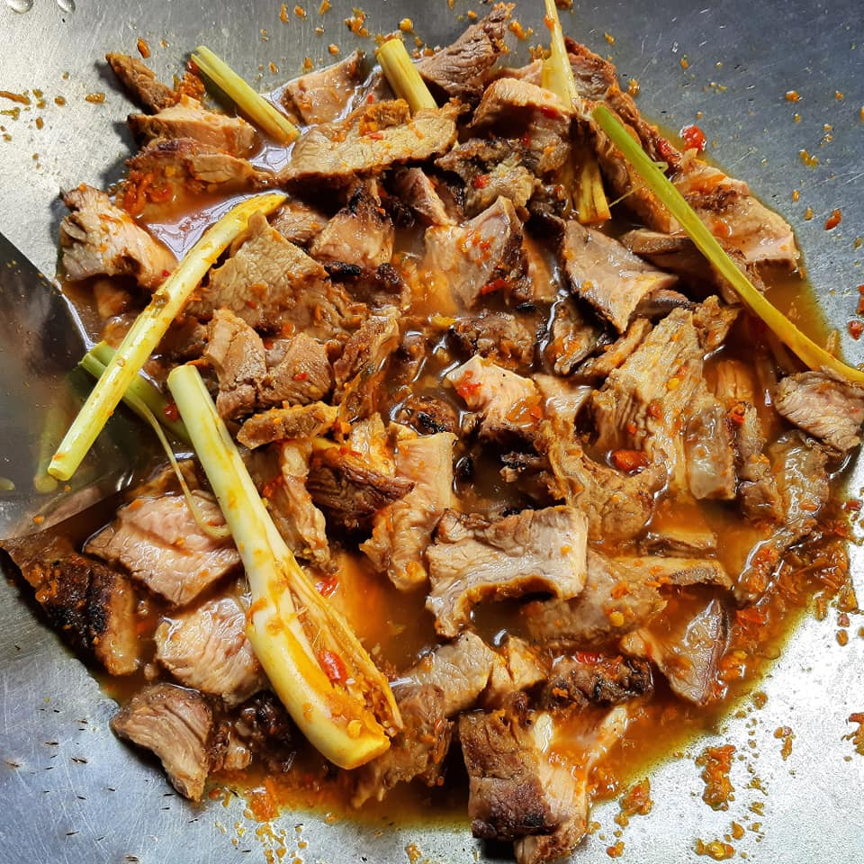

Baging Salai Nogoghi Sombilan

Description
Daging salai memang sedap kalau buat Masak Lemak Cili Api. Terasa bau asap dalam kuah, lagi terangkat! Jika tiba-tiba teringin nak makan lauk daging salai tapi susah nak jumpa orang yang jual, cara dibawah ni anda boleh cuba.
Kaedah ini sesuai dipraktikkan oleh anda yang tinggal di rumah-rumah tinggi macam kondominium dan apartment. Maklumlah, kawasan tanah tak ada. Macam mana nak nyalakan arang. Betul tak? Jadi solutionnya, boleh cuba cara ni. Mudah! Selamat mencuba!
Ingredients
- Daging – sebaiknya daging batang pinang
- Garam & serbuk kunyit secukupnya
- Daun pisang
Steps
- Potong daging kepada kepingan yang bersesuaian. Rebus seketika dan jangan terlalu lama. Takut manis daging hilang. Anda perlu rebus jika guna daging bukan batang pinang. Jika guna daging batang pinang, tak perlu rebus.
- Toskan dan gaul daging tadi dengan serbuk kunyit dan garam secukupnya.
- Ambil pemanggang dan alaskan dengan daun pisang di dasarnya. Susun daging yang telah dilumur kunyit garam tadi.
- Terbalikkan daging supaya masak sekata.
- Setelah air daging berhenti menitis, alihkan lapik pemanggang tadi dan bakar daging menggunakan api. Ia bertujuan untuk dapatkan rasa dan bau hangus pada daging.
- Angkat dan hiris nipis. Sedia untuk dimasak mengikut citarasa anda. Paling best, Masak lemak Cili Api lah!